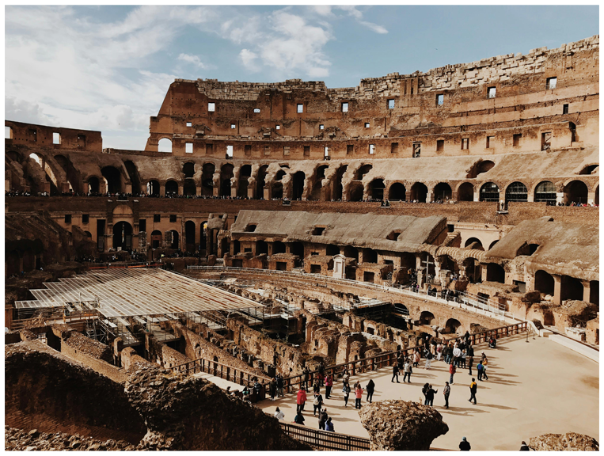
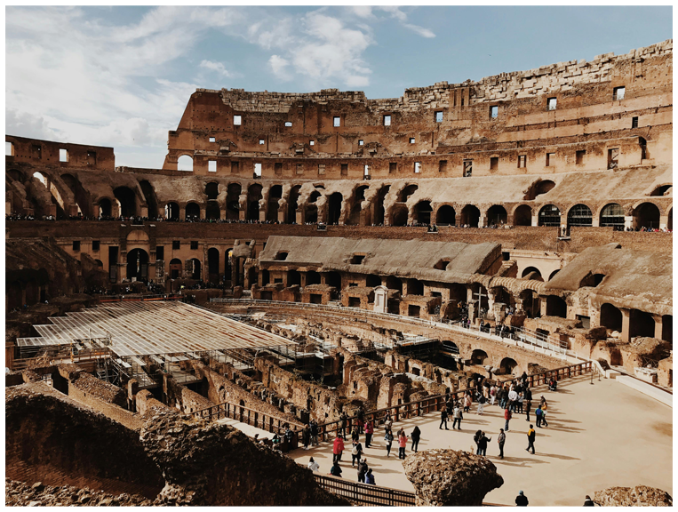
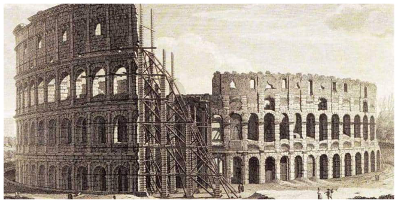
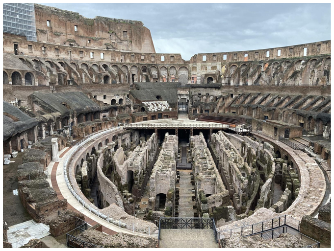

HOW IT WAS BUILT
The Colosseum was a massive engineering project for its time, built through the labor of tens of thousands of slaves and skilled workers.
Each stone used in its construction was carefully numbered and lifted into place using cranes powered by pulleys and the strength of humans or animals.
The outer wall featured three levels of arches, each adorned with columns in different styles: Doric, Ionic, and Corinthian , stacked one above the other.
Inside, the Colosseum had 80 entrances designed for efficient crowd movement, much like a modern sports stadium with excellent crowd control.


 Click to see more info
Click to see more info